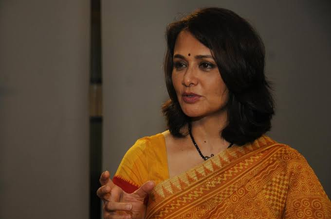

Nagulapati Srinivasa Chakravarthy, known professionally as J. D. Chakravarthy, is an Indian actor, filmmaker, screenwriter and musician known for his work primarily with Telugu cinema in addition to Hindi, Tamil, and Malayalam films. Chakravarthy made his screen debut with the Telugu film, Siva, an action blockbuster directed by Ram Gopal Varma, featured at the 12th IFFI.[1] He subsequently made his Bollywood debut with the remake of the same film titled Shiva (1990). He then starred in the blockbuster Satya, featured in the Indian panorama section at the 29th IFFI, and was listed among CNN-IBN's 100 greatest Indian films of all time.[2][3] Chakravarthy received the Screen Award Special Jury Award.[4][5].He debuted in 1989 through Ram Gopal Verma's debut Telugu film, Siva as J.D., as one of the student leaders, and in the same year appeared in a supporting role in the Malayalam film Ennodu Ishtam Koodamo before devoting all his time to films under his mentor's Ram Gopal Varma 's production. He has worked in many Telugu films directed by ace film makers of the time like Mani Ratnam, Krishna Vamsi, S. V. Krishna Reddy, K. Raghavendra Rao, Kodi Ramakrishna, E. V. V. Satyanarayana, Siva Nageswara Rao, Gunasekhar, and Vamsy.[14][15] His first Hindi film in a lead role, Satya, was critically acclaimed and became a commercial blockbuster.[16] In 2002, he played a role of Sri Lankan Tamil Eelam fighter Dileepan, in Mani Ratnam's Tamil film, Kannathil Muthamittal. He also starred in Hindi film like Vaastu Shastra, and Aag alongside Sushmita Sen, and Bhoot Returns alongside Manisha Koirala. He made his film directing debut, with Darwaaza Bandh Rakho and anthology film Darna Zaroori Hai got archived at the New York Institute of Technology, New York, America as part of the film course [17][18] He has returned to Telugu film industry with Homam as a director and actor in the year 2008.[19] He then went on to direct Siddham.[18] He had a role in director Vishnuvardhan's Tamil film Sarvam, starring Arya and Trisha.[5] In 2016, he has appeared in the Malayalam film Bhaskar the Rascal pairing with Nayanthara also starring Mammootty. Then he played a young army officer in another Malayalam film Shikhamani, and made his Kannada film debut with the unreleased Raavani alongside Pooja Gandhi.[20][21]
Amala Akkineni (née Mukherjee) (born 12 September 1967[1]) is an Indian actress, Bharatanatyam dancer, and activist.[2] She has predominantly worked in Tamil films, in addition to Telugu, Hindi, Malayalam, and Kannada-language films. She was a leading actress in the Tamil film industry from 1986 to 1992 and has appeared in many blockbusters in Tamil and other languages. She has won two Filmfare Awards South, namely Best Actress – Malayalam for the 1991 film Ulladakkam[3] and Best Supporting Actress – Telugu for the 2012 film Life Is Beautiful.[4] Amala is the co-founder of Blue Cross of Hyderabad,[5] a non-government organisation (NGO) in Hyderabad, India, which works towards the welfare of animals and preservation of animal rights in India.[6][7].She was persuaded to join films by T. Rajendar, who visited her home with his wife Usha and convinced her mother to let her act in the film, which would be a classical film featuring her Bharatanatyam dancing.[17] That film was Mythili Ennai Kaathali (1986) which was a box office hit. After the film's success, she acted in several Tamil films such as Mella Thirandhathu Kadhavu (1986), Panneer Nadhigal (1986) and Velaikkaran (1987).[18] She acted with her future husband Akkineni Nagarjuna in hits such as Nirnayam and Siva.[19] She garnered acclaim for her role in the film Ulladakkam (1991).[20] She quit acting in 1992 following her marriage to Nagarjuna. After a hiatus of 20 years she made a comeback in 2012 with the Telugu film Life is Beautiful.[21] She received a CineMAA Award for Best Outstanding Actress and Telugu category Filmfare Award for best supporting actress in 2013 for her portrayal. She returned to Malayalam cinema with C/O Saira Banu after a gap of 25 years, since Ulladakkam.[22].Amala was born in Calcutta (present-day Kolkata) to a Bengali Indian Navy officer and an Irish mother.[8][9] Their family soon shifted to Madras (present-day Chennai) where she was brought up.[10] She has a brother. Amala holds a Bachelor of Fine Arts degree in Bharatanatyam from Kalakshetra college of fine arts, Madras now Chennai.[11] She gave many live performances worldwide.[12][13] She is fluent in English, Tamil and Telugu, and can understand Bengali.[14][15].Amala Akkineni (née Mukherjee) (born 12 September 1967[1]) is an Indian actress, Bharatanatyam dancer, and activist.[2] She has predominantly worked in Tamil films, in addition to Telugu, Hindi, Malayalam, and Kannada-language films. She was a leading actress in the Tamil film industry from 1986 to 1992 and has appeared in many blockbusters in Tamil and other languages. She has won two Filmfare Awards South, namely Best Actress – Malayalam for the 1991 film Ulladakkam[3] and Best Supporting Actress – Telugu for the 2012 film Life Is Beautiful.[4] Amala is the co-founder of Blue Cross of Hyderabad,[5] a non-government organisation (NGO) in Hyderabad, India, which works towards the welfare of animals and preservation of animal rights in India.[6][7].Amala Akkineni (née Mukherjee) (born 12 September 1967[1]) is an Indian actress, Bharatanatyam dancer, and activist.[2] She has predominantly worked in Tamil films, in addition to Telugu, Hindi, Malayalam, and Kannada-language films. She was a leading actress in the Tamil film industry from 1986 to 1992 and has appeared in many blockbusters in Tamil and other languages. She has won two Filmfare Awards South, namely Best Actress – Malayalam for the 1991 film Ulladakkam[3] and Best Supporting Actress – Telugu for the 2012 film Life Is Beautiful.[4] Amala is the co-founder of Blue Cross of Hyderabad,[5] a non-government organisation (NGO) in Hyderabad, India, which works towards the welfare of animals and preservation of animal rights in India.[6][7].Amala Akkineni (née Mukherjee) (born 12 September 1967[1]) is an Indian actress, Bharatanatyam dancer, and activist.[2] She has predominantly worked in Tamil films, in addition to Telugu, Hindi, Malayalam, and Kannada-language films. She was a leading actress in the Tamil film industry from 1986 to 1992 and has appeared in many blockbusters in Tamil and other languages. She has won two Filmfare Awards South, namely Best Actress – Malayalam for the 1991 film Ulladakkam[3] and Best Supporting Actress – Telugu for the 2012 film Life Is Beautiful.[4] Amala is the co-founder of Blue Cross of Hyderabad,[5] a non-government organisation (NGO) in Hyderabad, India, which works towards the welfare of animals and preservation of animal rights in India.[6][7].Amala Akkineni (née Mukherjee) (born 12 September 1967[1]) is an Indian actress, Bharatanatyam dancer, and activist.[2] She has predominantly worked in Tamil films, in addition to Telugu, Hindi, Malayalam, and Kannada-language films. She was a leading actress in the Tamil film industry from 1986 to 1992 and has appeared in many blockbusters in Tamil and other languages. She has won two Filmfare Awards South, namely Best Actress – Malayalam for the 1991 film Ulladakkam[3] and Best Supporting Actress – Telugu for the 2012 film Life Is Beautiful.[4] Amala is the co-founder of Blue Cross of Hyderabad,[5] a non-government organisation (NGO) in Hyderabad, India, which works towards the welfare of animals and preservation of animal rights in India.[6][7].
